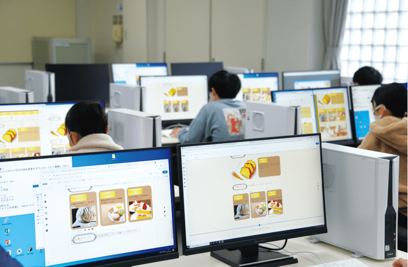
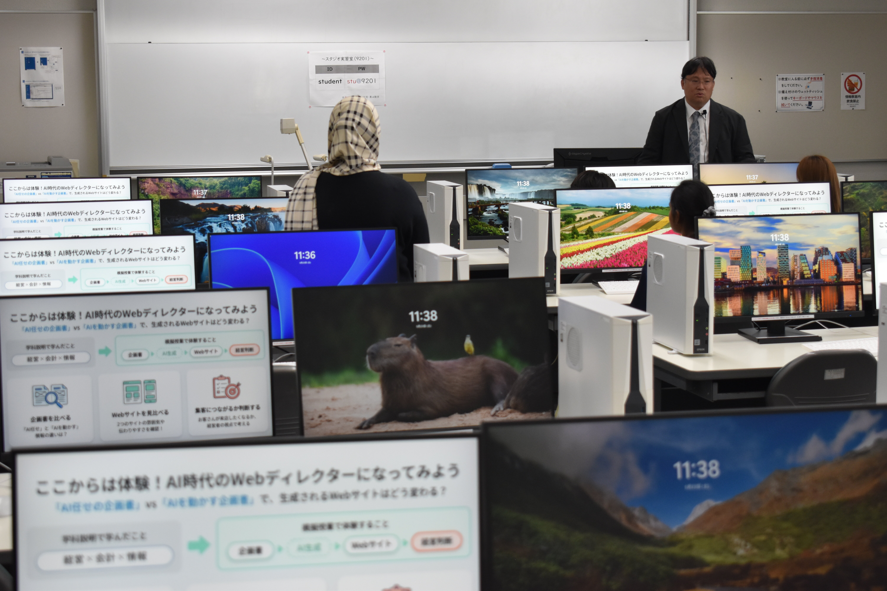
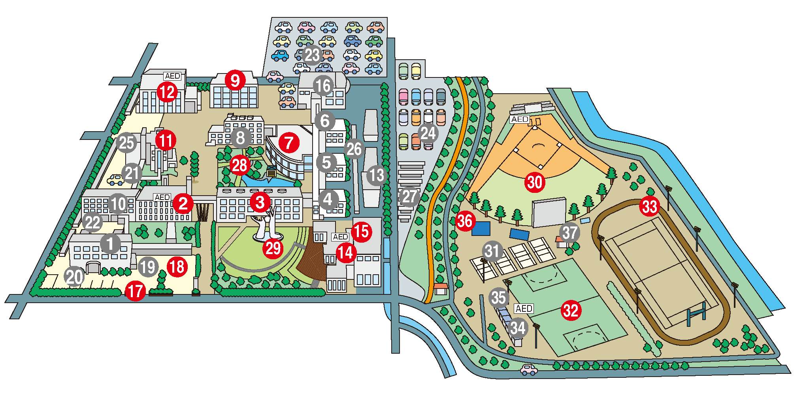
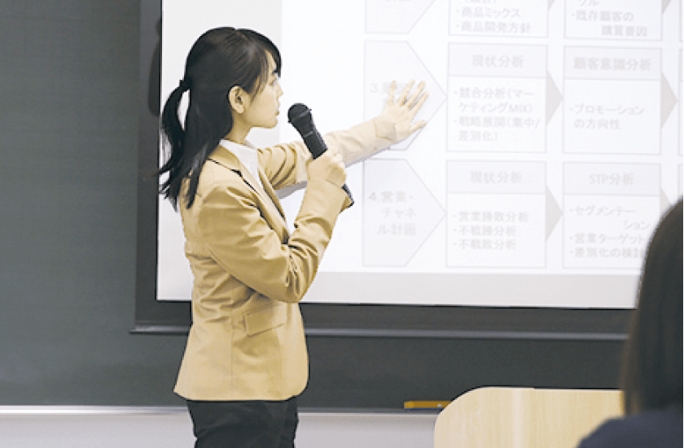

09LEARNING SPACE
情報センター（9号館）
Webデザインや動画編集に取り組める実習環境。高性能PCやクリエイティブツールを使い、アイデアを形にします。
- Web制作
- 動画編集
- グループ学習
GKU HIGH SCHOOL STUDENTS
授業、キャンパス、学生生活を触って確かめる3分間。
経営情報学科の「考える・つくる・伝える」を先取りしよう。

01 / EXPERIENCE
気になるカードを選ぶと、体験内容が切り替わります。
LESSON EXPERIENCE
3つの条件を選び、企画によってWebサイトの見え方がどう変わるか確かめよう。
FOR 高校生
イベントに参加してほしい人へ。ワクワクする体験を、分かりやすく届けます。
経営情報学科では、見た目をつくるだけでなく、相手・目的・伝え方を設計する力を学びます。
CAMPUS TOUR
北方キャンパスの代表的なスポットをピックアップしています。


09LEARNING SPACE
Webデザインや動画編集に取り組める実習環境。高性能PCやクリエイティブツールを使い、アイデアを形にします。
STUDENT LIFE
経営情報学科の「ある1日」をイメージしたタイムラインです。
CREATE
Web制作では、デザインだけでなく「誰に、何を、どう伝えるか」まで考えます。つくって、動かして、改善する授業です。
02 / DEPARTMENT
経営・会計・情報の3分野を行き来しながら、社会で使える提案力と実践力を育てます。

01MANAGEMENT
商品企画、ブランド、マーケティング、プロジェクト運営。相手のニーズを読み、アイデアを実現する道筋を考えます。
LEARN BY DOING
Web、アプリ、データ、デジタルコンテンツ。つくる力と、届け方・事業としての意味を考える力を同時に身につけます。
FUTURE PATH
03 / PROJECTS
企業・自治体・地域と関わりながら、学んだことを現場で試します。
04 / FIT CHECK
3つの質問に答えると、経営情報学科で伸ばせそうな力が分かります。
どちらの瞬間にワクワクする？
YOUR TYPE
人の気持ちや社会の変化から、サービスの魅力を考えるのが得意。経営・マーケティングの学びで力が伸びそうです。
FROM SCREEN TO CAMPUS
模擬授業、キャンパスツアー、学食体験、個別相談。画面では分からない空気を、オープンキャンパスで確かめてください。